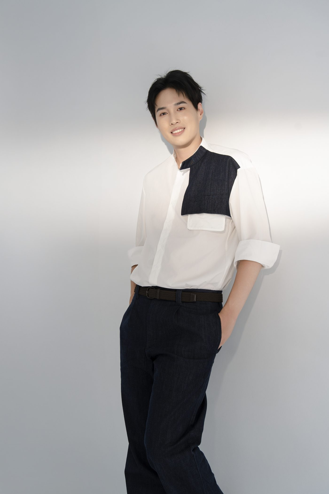

多數牙醫師的照片只需要回答一件事：這是誰、哪一科、在哪間診所。診間的工作本來就是這樣運作的，病人坐在椅子上，你在旁邊，照片只負責在那之前讓人確認找對了地方。
但有些人的工作會慢慢長出第二層。開始有院內教學、有廠商的產品分享、有同業社群的講座邀請，也可能開始經營自己的內容。這時候照片要面對的人變了：不再只是要來看診的病人，還有邀你講課的承辦人、想找你合作的品牌，以及在社群上第一次看到你的同業。
他原本卡在哪裡
問題不是照片不好看，是手上只有一種。診所官網那張正面半身照，用在掛號頁面剛剛好，但主辦單位要一張橫幅主視覺、廠商要一張能放進提案的情境照、社群需要一張看起來可以聊聊的生活感畫面，這些他都交不出來。
更麻煩的是時間差。這些需求出現的時候通常都很急，對方今天問、明天就要。等到那一刻才發現手上沒有，能做的只剩從舊照片裡挑一張最不違和的交出去。
先確認要被誰看見
拍攝之前先做的是一場約 45 分鐘的深度訪談，訪談前會請他填一份簡短問卷，當天直接進重點。要釐清的不是他適合什麼風格，而是更前面的一題：現在被看見的樣子，和想被看見的樣子，差在哪裡。
他的答案有個特別的地方。他要的不是把「醫師」這個身分拿掉，而是讓醫師之外的那一層也能被看見：他對美感的判斷、他把想法落地的能力、他願意站到台前說話的那一面。這兩件事不衝突，但需要不同的畫面來承接。
三組畫面，三種用途
同一個人，這次拍了三種面向。它們不是三種風格的嘗試，是三種用途。
白袍。這是他的職業身分，也是最多人先認出他的那一層。它說明醫療身分，但說明不了是哪一位，所以它適合當其中一組，不適合當唯一一組。
深色西裝與皮革外套。這一組是為台前的場合準備的：講座主視覺、媒體版位、活動手冊。跟白袍那組最大的差別在視覺份量，站上講台之前，畫面要先撐得起場子。
白襯衫與丹寧。這一組拿掉了職稱，留下的是他這個人，用在社群、專訪的生活感版位，以及任何需要讓人覺得可以聊聊的地方。

這跟〈拍完形象照之後〉談的是同一件事：一次拍攝要涵蓋的不是幾套衣服，是接下來一段時間會遇到的幾種版位。
照片後來去了哪裡
這一段是案例真正的重點。照片拍完只是中途，實際被放進哪些位置，才決定這次拍攝值不值得。
【待補：實際部署位置。要問到具體的地方，例如診所官網、講座主視覺、活動手冊、社群主頁、媒體採訪、廠商提案。能拿到「哪一張用在哪裡」的對照最好，至少要三到四個真實位置，不要寫成通用清單。】
【待補：客戶原話。這一句必須是本人講的，不代寫。建議問法：「拍完之後，有沒有哪個場合你感覺到差別？」拿到什麼寫什麼，不修飾。】
如果你也在同一個位置
如果你的工作也開始長出第二層，值得先整理的不是要換什麼風格，而是兩件事：接下來會有哪些人在你不在場的時候看到你，以及那些場合各自需要什麼樣的畫面。
專業會先往前走，照片通常慢一步。差別只在於，你是在要交件的那天才發現手上沒有，還是提前把它準備好。